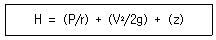
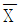

에너지관리기능장 (2017-03-05 기출문제)
1과목: 임의 구분
1. 작동방법에 따른 감압밸브의 분류에 포함되지 않는 것은?
- 로터리형
- 벨로즈형
- 다이어프램형
- 피스톤형
(정답률: 66%)

2. 온수난방 방열기의 방열량 3600kcal/h, 입구온수 온도가 75℃, 출구온수 온도가 65℃로 했을 경우, 1분당 유입 온수유량은 몇 kg인가?
- 6
- 10
- 12
- 40
(정답률: 61%)
3. 긴 수관으로만 구성된 보일러로 초임계압력 이상의 고압증기를 얻을 수 있는 관류 보일러는?
- 슈미트 보일러
- 베록스 보일러
- 라몬트 보일러
- 슐처 보일러
(정답률: 84%)
4. 부하변동에 적응성이 좋으며 응축수를 연속적으로 배출하고 자동공기배출이 이루어지며 볼과 레버가 수격작용으로 인해 파손이 생기기 쉽고 겨울철 동파위험이 있는 증기트랩은?
- 버킷 트랩
- 플로트 트랩
- 바이메탈식 트랩
- 벨로즈 트랩
(정답률: 75%)
5. 수소(H2)의 영향을 가장 많이 받으며, 휘스톤브리지 회로를 구성한 가스 분석계는?
- 밀도식 CO2계
- 오르자트식 가스분석계
- 가스크로마토그래피
- 열전도율형 CO2계
(정답률: 62%)
6. 보일러와 압력계 부착방법에 관한 설명으로 틀린 것은?
- 증기온도가 210℃가 넘을 때는 동관을 사용하여야 한다.
- 압력계에 연결되는 증기관은 동관일 경우 안지름 6.5mm 이상이어야 한다.
- 압력계의 코크 대신에 밸브를 사용할 경우에는 한 눈에 개폐 여부를 알 수 있는 구조로 하여야 한다.
- 압력계에 연결되는 관은 사이폰관을 부착하여 증기가 직접 압력계에 들어가지 않도록 하여야 한다.
(정답률: 85%)
7. 자동제어 방법에서 추치제어의 종류가 아닌 것은?
- 추종제어
- 정치제어
- 비율제어
- 프로그램 제어
(정답률: 67%)
8. 원심펌프가 회전수 600rpm에서 양정이 20m이고, 송출량이 매분 0.5m3이다. 이 펌프의 회전수를 900rpm으로 바꾸면 양정은 얼마나 되는가?
- 25m
- 30m
- 45m
- 60m
(정답률: 60%)
9. 난방부하에 관한 설명으로 옳은 것은?
- 틈새바람의 양을 예측하는 방법으로 환기횟수법이 있다.
- 건축물 구조체에서의 열전달은 열전달계수와 관련이 있다.
- 표면열전달계수는 풍속과는 관련이 없고 재질에 영향을 받는다.
- 위험율 2.5% 온도는 최대부하에 근거한 외기온도보다 2.5% 낮은 온도를 기준한다.
(정답률: 74%)
10. 전양식 안전밸브를 사용하는 증기보일러에서 분출압력이 15kg/cm2이고, 밸브시트 구멍의 지름이 50mm일 때 분출용량은 약 몇 kg/h인가?
- 12985
- 12920
- 12013
- 11525
(정답률: 54%)
11. 증기 난방방식에서 응축수 환수방식에 의한 분류 중 진공 환수방식에 대한 설명으로 틀린 것은?
- 환수주관의 말단에 진공펌프를 설치한다.
- 환수관에서의 진공도는 20~30mmHg이다.
- 방열량을 광범위하게 조절할 수 있어서 대규모 난방에 적합하다.
- 방열기 설치 위치에 제한을 받지 않는다.
(정답률: 69%)
12. 보일러 연돌의 통풍력에 관한 설명으로 틀린 것은?
- 연돌의 높이가 높을수록 통풍력이 크다.
- 연돌의 단면적이 클수록 통풍력이 크다.
- 연돌 내 배기가스의 온도가 높을수록 통풍력이 크다.
- 연돌의 온도구배가 작을수록 통풍력이 크다.
(정답률: 71%)
13. 보일러 급수장치는 주펌프 세트 외에 보조펌프 세트를 갖추어야 하는데 관류 보일러의 경우 전열면적이 몇 m2 이하이면 보조펌프를 생략할 수 있는가?
- 12m2
- 14m2
- 50m2
- 100m2
(정답률: 65%)
14. 고압기류식 분무버너의 특징에 관한 설명으로 옳은 것은?
- 연료유의 점도가 크면 비교적 무화가 곤란하다.
- 연소 시 소음의 발생이 적다.
- 유량 조절범위가 1：3 정도로 좁다.
- 공기 또는 증기를 분사시켜 기름을 무화하는 방식이다.
(정답률: 74%)
15. 버너에서 착화를 확실히 하고, 화염이 꺼지지 않도록 화염의 안정을 도모하기 위해 설치되는 장치는?
- 스택스위치
- 플레임아이
- 플레임로드
- 보염기
(정답률: 81%)
16. 일정한 조건 아래에서 휘발성 물질의 증기가 다른 작은 불꽃에 의하여 불이 붙는 가장 낮은 온도를 무엇이라고 하는가?
- 인화점
- 임계점
- 연소점
- 유동점
(정답률: 84%)
17. 송기장치 배관에 대한 설명으로 옳은 것은?
- 증기 헤더의 직경은 주증기관의 관경보다 작아도 된다.
- 벨로즈형 신축이음쇠는 일명 신축곡관이라고 하며, 고압배관에 적당하다.
- 트랩의 구비조건은 마찰저항이 크고 응축수를 단속적으로 배출할 수 있어야 한다.
- 감압밸브는 고압 측 압력의 변동에 관계없이 저압 측 압력을 항상 일정하게 유지한다.
(정답률: 76%)
18. 급수펌프의 구비조건에 대한 설명으로 틀린 것은?
- 고온, 고압에도 충분히 견디어야 한다.
- 부하변동에 대한 대응이 좋아야 한다.
- 고ㆍ저부하 시에는 반드시 펌프가 정지하여야 한다.
- 작동이 확실하고 조작이 간편하여야 한다.
(정답률: 88%)
19. 천장이나 벽, 바닥 등에 코일을 매설하여 온수 등 열매체를 이용하여 복사열에 의해 실내를 난방하는 것은?
- 대류난방
- 패널난방
- 간접난방
- 전도난방
(정답률: 84%)
20. 탄소 12kg을 완전 연소시키기 위하여 필요한 산소량은?
- 16kg
- 24kg
- 32kg
- 36kg
(정답률: 51%)
2과목: 임의 구분
21. 수관식 보일러에서 전열면의 증발률(Be1)을 구하는 식은?
- Be1 = 총증기발생량/전열면적
- Be1 = 매시실제증기발생량/전열면적
- Be1 = 전열면적/총증기발생량
- Be1 = 전열면적/매시실제증기발생량
(정답률: 74%)
22. 가압수식 집진장치가 아닌 것은?
- 벤투리 스크러버
- 사이클론 스크러버
- 제트 스크러버
- 타이젠 와셔식
(정답률: 71%)
23. 복사난방에 관한 설명으로 틀린 것은?
- 별도의 방열기가 없으므로 공간 활용도가 높아진다.
- 열용량이 작고 방열량 조절 시간이 짧아 간헐난방에 적합하다.
- 화상을 입을 염려가 없고, 공기의 오염이 적다.
- 매립 코일의 고장 시 수리가 어렵다.
(정답률: 82%)
24. 증기 선도에서 임계점이란?
- 고체, 액체, 기체가 불평형을 유지하는 점이다.
- 증발잠열이 어느 압력에 달하면 0이 되는 점이다.
- 증기와 액체가 평형으로 존재할 수 없는 상태의 점이다.
- 건포화증기를 계속 가열하면 압력 변동 없이 온도만 상승하는 점이다.
(정답률: 75%)
25. 표준 대기압에 해당되지 않는 것은?
- 760mmHg
- 101325N/m2
- 10.3323mAq
- 12.7psi
(정답률: 82%)
26. 냉동 사이클의 이상적인 사이클은 어느 것인가?
- 오토 사이클
- 디젤 사이클
- 스털링 사이클
- 역카르노 사이클
(정답률: 83%)
27. 물속에 경사지게 평판이 잠겨 있다. 이 경사 평판에 작용하는 압력의 중심에 대한 설명으로 옳은 것은?
- 압력의 중심은 도심의 아래에 있다.
- 압력의 중심은 도심과 동일하다.
- 압력의 중심은 도심보다 위에 있다.
- 압력의 중심은 도심과 같은 높이의 우측에 있다.
(정답률: 69%)
28. 이상기체가 일정한 압력 하에서의 부피가 2배가 되려면 초기 온도가 27℃인 기체는 몇 ℃가 되어야 하는가?
- 54℃
- 108℃
- 300℃
- 327℃
(정답률: 66%)
29. 가성취화 현상에 관한 설명으로 옳은 것은?
- 물과 접촉하고 있는 강재의 표면에서 철이온이 용출하여 부식되는 현상이다.
- 보일러 강판과 관이 화염의 접촉으로 화학작용을 일으켜 부식되는 현상이다.
- 청관제인 탄산나트륨을 과다하게 공급하여 보일러수가 알칼리화되어 부식되는 현상이다.
- 보일러판의 리벳트 구멍 등에 고농도 알칼리 작용에 의해 강 조직을 침범하여 균열이 생기는 현상이다.
(정답률: 80%)
30. 증기보일러에 부착된 저양정식 안전밸브의 분출압력이 0.1MPa, 밸브의 단면적이 100mm2이다. 이 밸브의 증기 분출용량(kg/h)은? (단, 계수는 1로 한다.)
- 9.23kg/h
- 20.31kg/h
- 51.36kg/h
- 82.47kg/h
(정답률: 43%)
31. 보일러 수의 관내 처리를 위하여 투입하는 청관제의 사용 목적으로 가장 거리가 먼 것은?
- pH 조정
- 탈산소
- 가성취화 방지
- 기포발생 촉진
(정답률: 83%)
32. 열전도율의 단위로 옳은 것은?
- kcal/mㆍhㆍ℃
- kcal/m2ㆍhㆍ℃
- kcalㆍ℃/mㆍh
- m2ㆍhㆍ℃/kcal
(정답률: 53%)
33. 다음의 베르누이 방정식에서 P/r 항은 무엇을 의미하는가? (단, H : 전수두, P : 압력, r : 비중량, V : 유속, g : 중력가속도, z : 위치수두)

- 압력수두
- 속도수두
- 공압수두
- 유속수두
(정답률: 86%)
34. 보일러 내면에 발생하는 점식(pitting)의 방지법이 아닌 것은?
- 용존산소를 제거한다.
- 아연판을 매단다.
- 내면에 도료를 칠한다.
- 브리딩 스페이스를 작게 한다.
(정답률: 74%)
35. 신설 보일러의 소다 끓임 조작 시 사용하는 약품의 종류가 아닌 것은?
- 탄산나트륨
- 수산화나트륨
- 질산나트륨
- 제3인산나트륨
(정답률: 58%)
36. 증기난방에서 수격작용 방지법이 아닌 것은?
- 주증기관을 냉각 후 송기한다.
- 주증기 밸브를 서서히 연다.
- 증기관 경사도를 준다.
- 과부하를 피한다.
(정답률: 72%)
37. 보일러 전열면의 고온부식을 일으키는 연료의 주성분은?
- O2(산소)
- H2(수소)
- S(유황)
- V (바나듐)
(정답률: 81%)
38. 유체에서 체적탄성계수의 단위는?
- N/m2
- m2/N
- Nㆍm
- N/m3
(정답률: 65%)
39. 유체의 흐름에서 관이 확대되면 압력은?
- 높아진다.
- 낮아진다.
- 일정하다.
- 높아지다가 일정해진다.
(정답률: 82%)
40. 보일러 급수 중의 용존가스(O2, CO2)를 제거하는 방법으로 가장 적합한 것은?
- 석회소다법
- 탈기법
- 이온교환법
- 침강분리법
(정답률: 75%)
3과목: 임의 구분
41. 압력배관용 강관의 사용압력이 30kg/cm2, 인장강도가 20kg/mm2일 때의 스케줄 번호는? (단 안전율은 4로 한다.)
- 30
- 40
- 60
- 80
(정답률: 63%)
42. 내화물의 균열현상을 나타내는 스폴링의 분류에 해당되지 않는 것은?
- 열적 스폴링
- 조직적 스폴링
- 화학적 스폴링
- 기계적 스폴링
(정답률: 60%)
43. 동관과 강관의 이음에 사용되는 것으로 분해, 조립이 비교적 자유로운 이음방식은?
- 플라스턴 이음
- MR 이음
- 용접 이음
- 플랜지 이음
(정답률: 84%)
44. 보일러에서 발생한 증기는 주증기 헤더를 통해서 각 사용처에 공급된다. 증기헤더의 설치목적으로 가장 적당한 것은?
- 각 사용처에 양질의 증기를 안정적으로 공급하기 위하여
- 보일러실 근무자가 스팀 사용량을 통제하여 보일러를 보호하기 위하여
- 발생 증기의 1차 저장 기능을 가지기 위하여
- 증기의 압력을 자동으로 조정하여 일정하게 저장하기 위하여
(정답률: 82%)
45. 배관 지지의 필요조건에 해당되지 않는 것은?
- 관의 합계 중량을 지지하는 데 충분한 재료이어야 한다.
- 진동과 충격에 대해서 견고해야 한다.
- 관의 신축에 대하여 적합해야 한다.
- 관의 시공 시 구배 조정과는 관계없다.
(정답률: 84%)
46. 루프형 신축 곡관에서 곡관의 외경(d)이 25mm이고, 길이(L)가 1m일 때 흡수할 수 있는 배관의 신장(△l) 길이는 약 얼마인가?
- 0.3mm
- 0.75mm
- 3mm
- 7.5mm
(정답률: 45%)
47. 무기질 보온재 중 암면을 가공한 것으로 빌딩의 덕트, 천장, 마루 등의 단열재로 한 쪽면은 은박지 등을 부착하였으며, 사용온도가 600℃ 정도인 것은?
- 로코트(rocoat)
- 펠트(felt)
- 블랭킷(blanket)
- 하이 울(high wool)
(정답률: 72%)
48. 서브머지드 아크 용접에서 이면 비드에 언더컷의 결함이 발생하였다. 그 원인으로 옳은 것은?
- 용접 전류의 과대
- 용접 전류의 과소
- 용제 산포량 과대
- 용제 산포량 과소
(정답률: 84%)
49. 증기트랩의 점검방법으로 틀린 것은?
- 배출상태로 확인
- 수작업으로 감지 확인
- 초음파 탐지기를 이용하여 점검
- 사이트 그리스를 이용하여 점검
(정답률: 79%)
50. 배관의 동력 절단기 종류가 아닌 것은?
- 포터블 소잉 머신
- 고정식 소잉 머신
- 커팅 휠 전단기
- 리드형 전단기
(정답률: 72%)
51. 호칭지름 15A의 관을 반지름 90mm, 각도 90°로 구부리고자 할 때 필요한 곡선부의 길이는?
- 135.0mm
- 141.4mm
- 158.6mm
- 160.8mm
(정답률: 62%)
52. 에너지이용합리화법에 따라 산업통상자원부장관 또는 시ㆍ도지사가 소속 공무원 또는 한국에너지공단으로 하여금 검사하게 할 수 있는 사항이 아닌 것은?
- 에너지절약전문기업이 수행한 사업에 관한 사항
- 고효율시험기관의 지정을 위한 시험능력 확보 여부에 관한 사항
- 에너지다소비사업자의 에너지 사용량 신고이행 여부에 관한 사항
- 에너지절약전문기업의 경우 영업실적(연도별 계약 실적을 포함한다.)
(정답률: 81%)
53. 배관도에서 “EL－300 TOP”의 표시에 관한 설명으로 옳은 것은?
- 파이프 윗면이 기준면보다 300mm 높게 있다.
- 파이프 윗면이 기준면보다 300mm 낮게 있다.
- 파이프 밑면이 기준면보다 300mm 높게 있다.
- 파이프 밑면이 기준면보다 300mm 낮게 있다.
(정답률: 76%)
54. 가스절단장치에 관한 설명으로 틀린 것은?
- 독일식 절단 토치의 팁은 이심형이다.
- 프랑스식 절단 토치의 팁은 동심형이다.
- 중압식 절단 토치는 아세틸렌 가스 압력이 보통 0.⑤kgf/cm2 미만에서 사용된다.
- 산소나 아세틸렌 용기 내의 압력이 고압이므로 그 조정을 위해 압력조정기가 필요하다.
(정답률: 77%)
55. 워크 샘플링에 관한 설명 중 틀린 것은?
- 워크 샘플링은 일명 스냅리딩(Snap Reading)이라 불린다.
- 워크 샘플링은 스톱워치를 사용하여 관측대상을 순간적으로 관측하는 것이다.
- 워크 샘플링은 영국의 통계학자 L.H.C. Tippet가 가동률 조사를 위해 창안한 것이다.
- 워크 샘플링은 사람의 상태나 기계의 가동상태 및 작업의 종류 등을 순간적으로 관측하는 것이다.
(정답률: 59%)
56. 설비보전조직 중 지역보전(area maintenance)의 장단점에 해당하지 않는 것은?
- 현장 왕복시간이 증가한다.
- 조업요원과 지역보전요원과의 관계가 밀접해진다.
- 보전요원이 현장에 있으므로 생산 본위가 되며 생산의욕을 가진다.
- 같은 사람이 같은 설비를 담당하므로 설비를 잘 알며 충분한 서비스를 할 수 있다.
(정답률: 77%)
57. 3σ법의

관리도에서 공정이 관리상태에 있는데도 불구하고 관리상태가 아니라고 판정하는 제1종 과오는 약 몇 %인가?- 0.27
- 0.54
- 1.0
- 1.2
(정답률: 49%)
58. 검사의 종류 중 검사공정에 의한 분류에 해당되지 않는 것은?
- 수입검사
- 출하검사
- 출장검사
- 공정검사
(정답률: 84%)
59. 부적합품률이 20%인 공정에서 생산되는 제품을 매시간 10개씩 샘플링 검사하여 공정을 관리하려고 한다. 이때 측정되는 시료의 부적합품 수에 대한 기대값과 분산은 약 얼마인가?
- 기댓값：1.6, 분산：1.3
- 기댓값：1.6, 분산：1.6
- 기댓값：2.0, 분산：1.3
- 기댓값：2.0, 분산：1.6
(정답률: 57%)
60. 설비배치 및 개선의 목적을 설명한 내용으로 가장 관계가 먼 것은?
- 제공품의 증가
- 설비투자 최소화
- 이동거리의 감소
- 작업자 부하 평준화
(정답률: 65%)